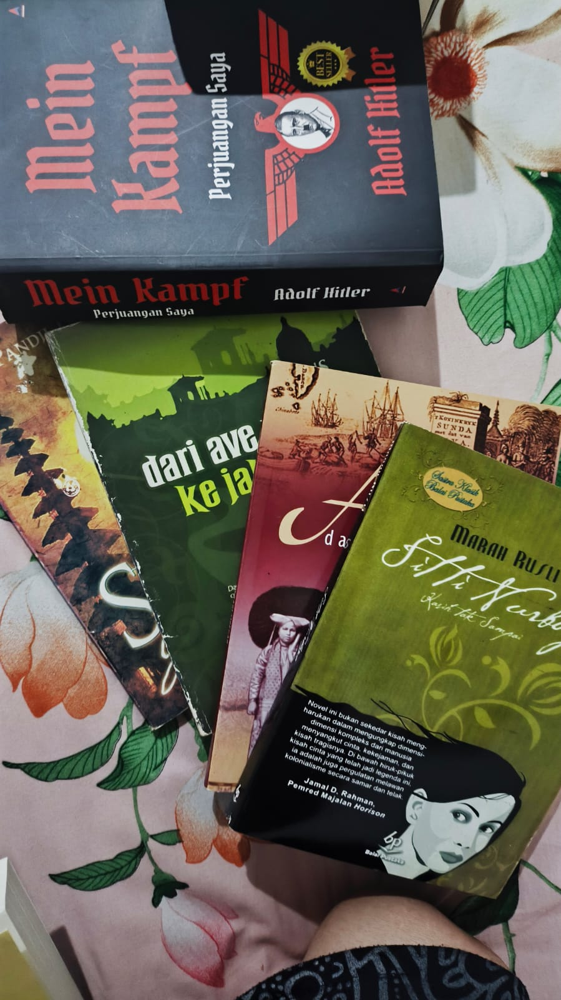

Selamat Datang di Dunia Membaca & Menonton Film
Membaca buku dan menonton film merupakan dua hobi utama yang sangat memberikan kebermanfaatan bagi saya. Melalui buku, saya dapat menyelami berbagai ide pikiran dari penulis ternama • mulai dari literatur sains seperti H2O hingga karya fiksi populer. Hobi ini bukan sekadar mengisi waktu luang, melainkan cara untuk memperluas cakrawala berpikir dan mengasah ketajaman daya analisis.
Di sisi lain, dunia sinematografi memberikan sudut pandang visual yang tak kalah menarik. Menikmati cerita yang disampaikan lewat narasi visual dengan resolusi hingga 108 piksel membantu saya mendapatkan kesegaran berpikir serta inspirasi baru — yang mana sangat mendukung perjalanan akademik saya di program studi Sistem Informasi UNISKA Banjarbaru.
